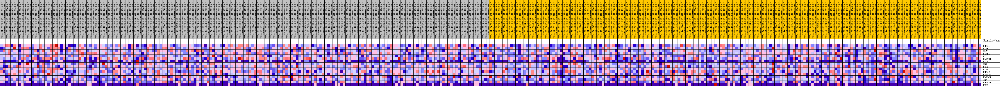
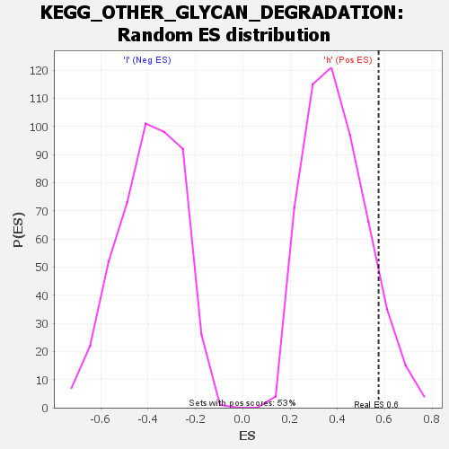

| | | Dataset | VCAN.VCAN.cls#h_versus_l.VCAN.cls#h_versus_l_repos |
| Phenotype | VCAN.cls#h_versus_l_repos |
| Upregulated in class | h |
| GeneSet | KEGG_OTHER_GLYCAN_DEGRADATION |
| Enrichment Score (ES) | 0.5741515 |
| Normalized Enrichment Score (NES) | 1.4521773 |
| Nominal p-value | 0.09848485 |
| FDR q-value | 1.0 |
| FWER p-Value | 0.834 |
Table: GSEA Results Summary
 Fig 1: Enrichment plot: KEGG_OTHER_GLYCAN_DEGRADATION
Fig 1: Enrichment plot: KEGG_OTHER_GLYCAN_DEGRADATION
Profile of the Running ES Score & Positions of GeneSet Members on the Rank Ordered List
| SYMBOL | TITLE | RANK IN GENE LIST | RANK METRIC SCORE | RUNNING ES | CORE ENRICHMENT | | 1 | FUCA1 | na | 294 | 0.121 | 0.1610 | Yes |
| 2 | HEXB | na | 1446 | 0.089 | 0.2626 | Yes |
| 3 | GLB1 | na | 1684 | 0.085 | 0.3754 | Yes |
| 4 | MANBA | na | 2302 | 0.078 | 0.4712 | Yes |
| 5 | NEU1 | na | 4752 | 0.058 | 0.5068 | Yes |
| 6 | MAN2B1 | na | 5226 | 0.055 | 0.5742 | Yes |
| 7 | NEU4 | na | 9603 | 0.033 | 0.5398 | No |
| 8 | GBA | na | 12462 | 0.021 | 0.5165 | No |
| 9 | NEU3 | na | 13855 | 0.015 | 0.5125 | No |
| 10 | HEXA | na | 13940 | 0.015 | 0.5318 | No |
| 11 | FUCA2 | na | 15068 | 0.011 | 0.5268 | No |
| 12 | MAN2B2 | na | 22636 | -0.004 | 0.3960 | No |
| 13 | MAN2C1 | na | 25638 | -0.013 | 0.3589 | No |
| 14 | AGA | na | 33403 | -0.034 | 0.2652 | No |
| 15 | ENGASE | na | 35824 | -0.041 | 0.2773 | No |
| 16 | NEU2 | na | 41026 | -0.054 | 0.2577 | No |
Table: GSEA details [plain text format]

Fig 2: KEGG_OTHER_GLYCAN_DEGRADATION
Blue-Pink O' Gram in the Space of the Analyzed GeneSet

Fig 3: KEGG_OTHER_GLYCAN_DEGRADATION: Random ES distribution
Gene set null distribution of ES for KEGG_OTHER_GLYCAN_DEGRADATION